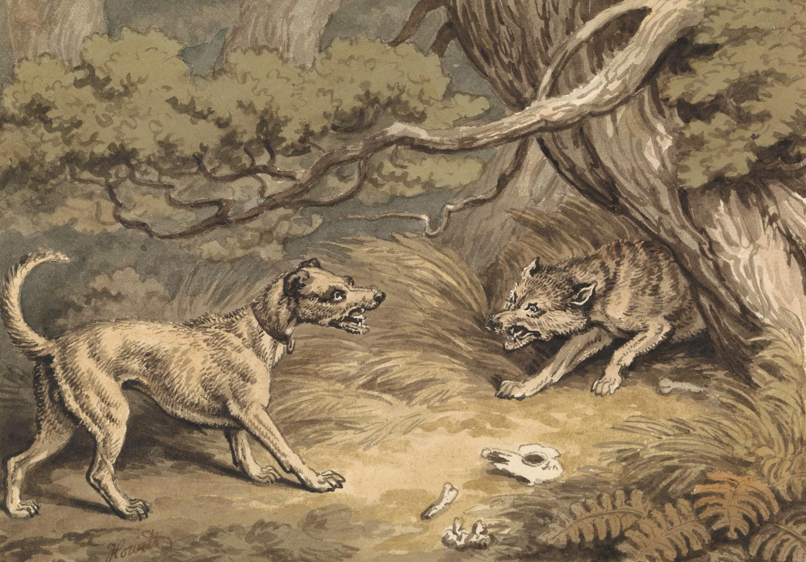

A gaunt Wolf was almost dead with hunger when he happened to meet a House-dog who was passing by. "Ah, Cousin," said the Dog. "I knew how it would be; your irregular life will soon be the ruin of you. Why do you not work steadily as I do, and get your food regularly given to you?"
"I would have no objection," said the Wolf, "if I could only get a place."
"I will easily arrange that for you," said the Dog; "come with me to my master and you shall share my work."
So the Wolf and the Dog went towards the town together. On the way there the Wolf noticed that the hair on a certain part of the Dog's neck was very much worn away, so he asked him how that had come about.
"Oh, it is nothing," said the Dog. "That is only the place where the collar is put on at night to keep me chained up; it chafes a bit, but one soon gets used to it."
"Is that all?" said the Wolf. "Then good-bye to you, Master Dog."
Better starve free than be a fat slave.